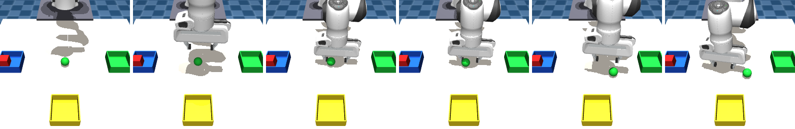
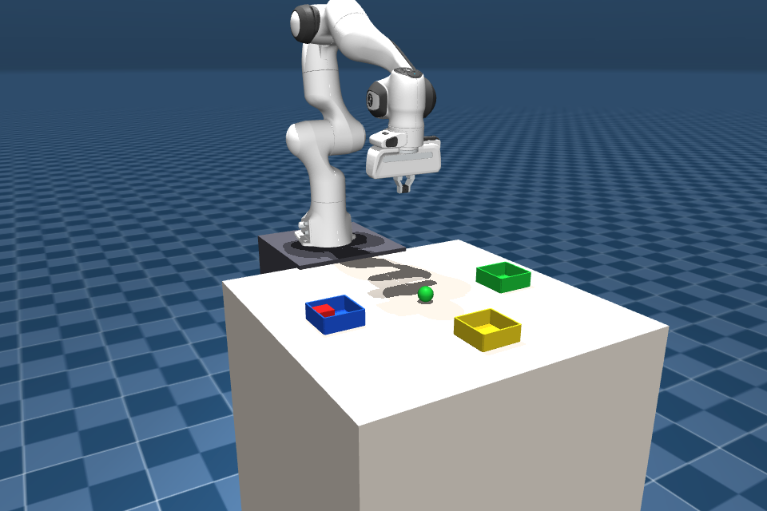
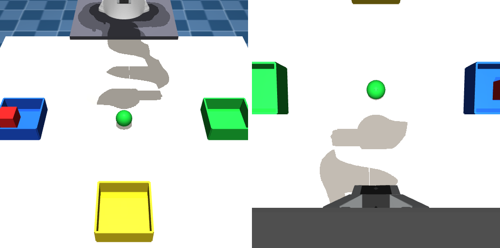
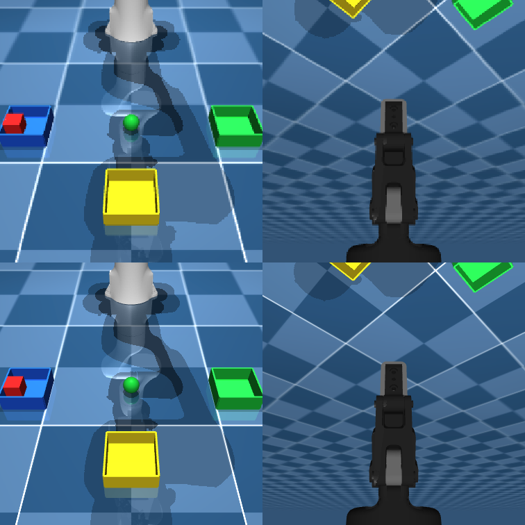
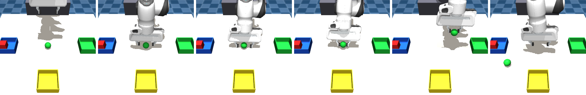
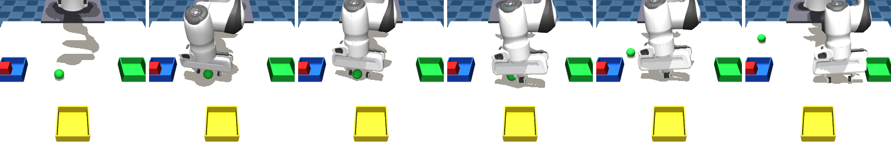
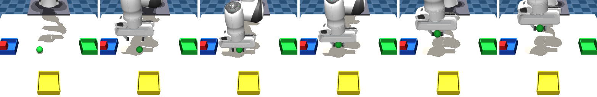

Teaching a VLA to pick up a green ball
Three checkpoints, one sim, and everything that had to match before the model could do anything at all.
Act I
Act II
Act III
00The problem
Can an off-the-shelf vision-language-action model drive our robot, in our simulator, on a task it has never seen?
The task: a Franka Panda in MuJoCo must pick up a green ball and place it in the green container — from a natural-language instruction and two camera images alone. Ball position and bin layout are randomised every episode, so nothing can be memorised.
Why it is hard:
- No task-specific model exists. Every VLA checkpoint was trained on some other robot, camera, controller and object set.
- Everything is a contract. Action units, control rate, coordinate origin, camera pose, gripper sign — mismatch any one and the model returns plausible-looking nonsense without erroring.
- No teleoperation rig. Any fine-tuning data has to be generated by the sim itself.
- GPUs cost money per experiment. Every rollout and every training step is rented.
The question we were really answering: when the robot fails — is it the model, the scene, or the loop?
Success is defined mechanically, not by eye: lift = ball leaves the table; place = ball ends inside the green bin within ±50 mm. Scored from the run logs.

01The setup
Same loop the whole way through — only the checkpoint behind /act changes.
2 cams + proprio ──POST /act──▶ Modal GPU
VLA policy ──action chunk──▶ controller
OSC / IK ──▶ physics
500 Hz
- Task: "pick up the green ball and put it in the green container", ball position randomised.
- Observation: external cam + wrist cam @256², end-effector pose + gripper state.
- Action: a chunk of 10–15 future steps per inference call, executed open-loop, then replan.
- Every run logs JSONL + every rendered frame — so failures are measurable, not anecdotal.
Everything that follows is one repeated lesson: the policy is fine, the environment contract is what breaks.


02Act I — MolmoAct2-DROID, and why it never had a chance
Pretrained on real camera footage of a real FR3 arm. Not a simulator, not our robot.
- Domain gap on both ends: photoreal RGB vs MuJoCo render, FR3 vs Panda.
- Action convention: 8-D absolute joint pose in raw radians, 15 Hz.
- Behaviour: arm drifts near the ball, never grasps. Ball never moves a millimetre.
- But the model was not the only thing failing — and we could not tell, because the loop itself was discarding ~97% of every command (next slide).
How we found out — "oracle replay": take the scripted expert's action sequence (the one that puts the ball in the bin every time during collection) and feed it through the inference loop in place of the model. Same start state, same execution path, same scoring — only the action source changes.
normal sim state ─▶ POST /act ─▶ model ─▶ chunk ─▶ apply_action ─▶ mj_step xN replay sim state ────────────▶ recorded expert actions ─▶ apply_action ─▶ mj_step xN
Free — local CPU, no GPU, seconds per run. And decisive: if actions with a proven 100% success rate score zero, the bug is downstream of the policy.

03Fix 1 — decimation: we were running the arm 33× too fast
One mj_step per action — but a policy action is not one physics step.
MuJoCo timestep 0.002 s -> one mj_step = 2 ms of physics DROID policy 15 Hz -> hold each action 66 ms = 33 steps LIBERO policy 20 Hz -> hold each action 50 ms = 25 steps old loop: 1 step per action -> 2 ms = 3% of the required hold
| path | final ball pos | in bin? |
|---|---|---|
| 1 step / action (old) | untouched from spawn | ✗ |
| 33 steps (decimation fix) | (0.682, −0.026) | ✓ |
Actions with a proven 100% success rate scored zero through the old path. So every earlier evaluation — base model and both fine-tunes — had a ceiling of zero. They all looked identical because the env discarded ~97% of every command, whatever the policy said. Those runs measured the bug, not the models.
held 33 steps ( 66 ms): joint2 −9% <- moving BACKWARD, gravity beats saturated motor held 165 steps (330 ms): 88% held 500 steps (1.00 s): 95% (settling takes ~330 ms, not 66)
Learning: control rate is part of the model's contract. The policy's Hz decides how long each action is held — 15 Hz → 33 steps, 20 Hz → 25 steps. It is not a convergence target: the arm tracks a ramp with a steady ~12 mm lag, exactly as in collection.

04Fix 2 — --replan-at: when to ask for the next chunk
Fire the next request mid-chunk for freshness, or after it for completeness?
| fire after action f | staleness (ticks) | actions actually used |
|---|---|---|
| 1 | 7 | 8 / 15 |
| 5 | 5 | 10 / 15 |
| 13 | 1 | 14 / 15 |
| 0 (sequential) | 0 | 15 / 15 |
- Early firing costs freshness and usable actions — it only buys wall-clock.
- The sim is frozen while waiting, so wall-clock is physically free.
- With delta actions (LIBERO), dropping expired actions loses displacement — sequential is the only safe mode.
Bonus: sequential mode made latency legible for the first time.
server dt (inference): 1394 ms round trip: 6845 ms unaccounted: 5451 ms <- ~4x inference: raw 1.14 MB JSON arrays
Decimation + sequential replanning together are what made runs look real-time and watchable instead of a twitching arm and 9 s of dead air per chunk.
05The first fine-tune data (fine_tunes/)
No teleop rig — so the expert is scripted, and the sim generates its own demos for free.
- IK-scripted expert: hover → descend → dwell → close → lift → transport → dwell → lower → release → retreat.
- Recorded through the real control path — labels are produced by the same function that will consume the model's output. Servo lag ends up inside the labels.
- Randomised ball position + arm start jitter; rejection sampled — an episode is kept only if the ball ends in the bin.
- 50 episodes / 6050 frames @15 fps, written as a LeRobot dataset, converted v2.1→v3.0 on a Modal volume.
- Fine-tune: action-expert only, VLM frozen, 500 steps, 1× H100.
Action-flow loss
Task success
Learning: "the loss converged" ≠ "the task works". With the VLM frozen the expert can only learn the average trajectory over the randomisation box — it closes the claw consistently to one side of the ball. More steps optimise a loss already at zero. Grounding needs the VLM to train too (LoRA).
06Act II — switch to MolmoAct2-LIBERO
5.57B params, pretrained on LIBERO: a robosuite/MuJoCo benchmark on a Franka Panda. Same simulator family, same arm.
| DROID | LIBERO | |
|---|---|---|
| control mode | absolute joint pose | delta end-effector pose |
| action | 8-D, raw radians | 7-D, normalised [−1,1] |
| horizon | 15 | 10 |
| control rate | 15 Hz → dec 33 | 20 Hz → dec 25 |
| state | joint angles | eef pos + axis-angle + gripper |
| norm tag | franka_droid | libero |
Silent-failure trap: the serving script hardcoded
norm_tag = "franka_droid". Serving the LIBERO checkpoint under the DROID tag returns
garbage actions of exactly the right shape — no error, no warning. This class of bug bit us
three separate times (norm tag, gripper sign, camera key).

agentview: ours was 1.9× further away with a 1.6× wider FOV — the ball was ~5 px, below one vision patch. Unlocalizable.07Making our sim be a LIBERO scene
The model conditions on absolute eef pose. Our objects sat on the floor; LIBERO's sit on a table with the robot on a 0.912 m pedestal.
Before: eef z 0.469 → 0.386 → 0.220 → 0.020 → −0.008
commanded dz: −0.106, −0.201, −0.289, −0.334 (relentlessly down)
the arm drove through the floor
Every z we reported was ~0.8 m outside the training distribution, so the model kept asking for descent that never arrived anywhere.
Rebuilt the scene against robosuite's own numbers (installed it and measured, rather than guessing):
| quantity | LIBERO | ours after |
|---|---|---|
| eef at reset, rel. link0 | (0.4515, 0, 0.2613) | (0.4515, 0, 0.2608) |
| eef axis-angle at reset | (3.1408, 0.0018, −0.0899) | (3.1403, 0, −0.0892) |
| table top rel. link0 | −0.012 | −0.012 (was −0.112) |
| ball size @256² | ~17 px | 16×17 px |
Learning: four independent, measurable errors — table 100 mm too low, eef site 9.5 mm out and yawed 90°, wrong reset pose, wrong origin offset. Also swapped in the stock Franka hand and robosuite's own wrist camera. Never hand-derive geometry — compute it, then render it and look.
08Delta-EE actions → Panda joint control
The policy emits a Cartesian delta. MuJoCo needs actuator commands. Two routes.
Route A — differential IK (first)
- delta → Cartesian target → one DLS IK step → command joint positions.
- Kept the existing position actuators, so nothing else changed.
- No compliance: IK solves for whatever it is handed and presses at up to 87 N·m.
Needed a
--min-clearancetable clamp to stop the hand sinking. - Realises ~33% of a commanded delta per tick.
Route B — native OSC (now default)
- Ported robosuite 1.4.0's
OSC_POSEonto torque actuators — the controller LIBERO actually trained through. - Sag 0.000 mm. No IK failures (
pinvdegrades smoothly). Compliance is native, so the clamp is off. - Timing detail that would have been a silent bug: robosuite recomputes torque every physics step (500 Hz) and only re-sets the goal at 20 Hz. Holding one torque for 25 steps is a different, unstable controller.
- Realises 12.3% per tick — matches the analytic critically-damped response to 0.3 pts. Near 100% would mean the port is wrong.
Sanity check that unblocked everything: ran the checkpoint against LIBERO's own benchmark env — 3/3 success. That rules out the serving path, the norm stats, the image orientation and the state layout in one shot, and puts the fault squarely on our side of the wire.
09MolmoAct2-LIBERO, natively on our task
Reaches the ball reliably. Lifts it sometimes.

- Aim is excellent: best lateral approach 8.1 mm (vs 45 / 32 mm before the scene fix).
- Grasp-and-lift ~1/3 runs. Placement 0/3.
- Failure signature: pads close ~1.6 mm below the ball's equator, so a frictional sphere squirts out sideways.
- The policy samples. Its action expert is flow-matching — two runs from an identical start state diverge completely. One rollout is one draw; only rates over N runs mean anything.
- Dropped serving from A100-40GB → L4: 2.6× cheaper, no latency penalty (transport dominates, not FLOPs).
10Fine-tuning a 5.57B model — and why we stopped
Data was cheap. Gradient steps were not.
Data generated (local CPU, free):
- Cohorts: reach (clean expert), noise (perturbed — teaches correction), recover (a hard kick mid-approach).
- Labels are the delta from the arm's actual pose to the reference — closed-loop, never a replayed plan.
- Written in the released LIBERO dataset's exact schema: LeRobot v3.0, inline PNG, 8-D state, mirrored gripper pair.
- Found a physics bug on the way: the expert lifted the ball every time, then dropped it mid-transport. A round ball between two flat pads is held by friction alone — nothing about the shape traps it — and the gripper kept squeezing until the ball squirted out sideways. We increased the friction on the ball and made the contact stiffer, so the squeeze stops at the surface. Demos then completed reliably.
Then the budget hit:
trainable params 657 M (LoRA r32 on VLM + full action expert) checkpoint save 200 s each (~$0.22 a save) $5 budget = 150 steps x batch 8 = 0.06 epochs
On the LoRA rank. Started at r32 — deliberately overkill for one task with one instruction string, but I wanted to see what the ceiling looked like before economising. The plan was to then sweep r4 / r8: ~4–8× fewer trainable parameters, cheaper steps, and a better fit to 30 episodes of a single task. Never got there — the budget ran out at the first rank.
Decision: at 0.06 epochs the honest read is "the checkpoint has barely moved off the base" — the risk isn't overfitting, it's paying to change nothing. A 5.6B model made every experiment cost real money, including the rank sweep. So: drop the MolmoAct2 fine-tune and change the model instead.
11Act III — SmolVLA-LIBERO: 12× smaller
Same benchmark, same conventions, a size where fine-tuning is actually affordable.
| MolmoAct2-LIBERO | SmolVLA-LIBERO | |
|---|---|---|
| params | 5.57 B | 0.45 B |
| VLM backbone | Molmo (Olmo + ViT) | SmolVLM2-500M |
| vision tokens | high-res, multi-crop | few tokens, half the VLM layers skipped |
| action head | flow-matching expert (0.62 B) | flow-matching expert (~0.1 B) |
| extra supervision | reasoning / trace tokens before acting | none — pure action |
| attention | causal LM over all tokens | interleaved cross-attn + self-attn expert |
| chunk | 10 | 50 (we serve 10) |
| serving GPU | L4 24 GB | T4 16 GB — cheapest offered |
| fine-tune cost | $5 = 0.06 epochs | $5 = many epochs |
The trade: MolmoAct2 spends parameters on reasoning about the scene; SmolVLA spends them on being small enough to actually adapt to your scene. For a single, narrow task the second is worth more. Published LIBERO avg 87.3% — treat as unverified, a reproduction issue reports 73%.
12SmolVLA stock — reaches, never picks
- Conventions matched byte for byte without translation: 8-D state, 7-D delta-EE action,
two 256² cameras, same
/actwire format. The sim client needed zero changes. - One trap: the wrist camera key. The policy looks up
observation.images.image2; hand itwrist_imageand it does not error — the wrist view just silently disappears. Renamed on both the dataset and the wire. - Full OSC path throughout — the largest remaining divergence from the plant it was trained on, removed.
- Result over 7 rollouts: 0 lifts, 0 placements. Closest lateral approach 10.7 mm; it reaches the ball and shoves it.
This is a grounding failure, not an action-generation one: across randomised ball positions closest approach was 10.7 / 108.2 / 46.4 mm. Missing by 108 mm at an unseen ball position means the VLM must be trained — so LoRA on the VLM, not the frozen-VLM recipe HuggingFace ships.

13Fine-tuning SmolVLA
Regenerated the dataset from scratch, because the controller had changed.
Data — a5, OSC-native:
- 30 episodes / 16,170 frames @ 20 fps, LeRobot v3.0.
- Re-collected through the OSC controller. The earlier sets were IK-collected: the two plants realise ~33% and ~12.3% of a commanded delta per tick, so their labels differ by ~3× and are not interchangeable.
- Noise magnitude re-calibrated from scratch for the new plant, not carried over.
Training:
- LoRA on the VLM + full action expert (grounding is what fails).
- Kept the checkpoint's own normalisation stats — rebuilding them from 30 episodes hands the expert a different affine map than it was trained under.
- LR decay pinned to the actual run length (the shipped schedule assumes 30k steps — run 2k against it and the LR never decays).
- Ran to ~2000 steps. Loss had not converged — stopped on time budget, not on a plateau.
Overfitting watch: 30 episodes of one task, one instruction string. The tell is the rotation channels collapsing — our task holds one top-down orientation throughout, so there is almost no rotational signal to learn. Save often and score every checkpoint in closed loop; the last one is not automatically the best.
14Where it landed
Fine-tuned SmolVLA — the best behaviour this project has produced.

Best lateral approach
Ball lifted & held
Rate over rollouts
Honest read: the typical run now hovers directly above the ball rather than missing or shoving it — the approach is solved, the commit to a grasp is not. That is what an under-trained checkpoint looks like, and the loss curve agrees.
15What we actually learned
- Pick the checkpoint for your plant, not its benchmark score. DROID→LIBERO was worth more than any tuning: same simulator, same arm, same action convention.
- Log everything, always. Every run wrote a JSONL of state-before, state-after, the model's raw actions and the timings — plus every rendered frame — flushed live so a run could be watched as it went. Almost nothing here was diagnosed by watching the arm; it was diagnosed by reading the logs afterwards. The decimation bug, the descent through the floor, the gripper that never closed, the grasp sitting 7 mm below the equator — all of them are invisible on screen and obvious in a log column.
- The logs also made experiments free: replaying recorded actions at different settings answered questions that would otherwise have cost GPU time, and let old runs be re-scored months later against a metric that didn't exist when they ran.
- Loss convergence ≠ task success. The DROID action expert hit 0.01 and changed nothing — with a frozen VLM it can only learn the average trajectory.
- Model size is an experiment-rate constraint. 5.6B meant $5 bought 0.06 epochs. 450M turned the same budget into a real run — and it is the smaller model that lifts the ball.
- Labels must come from the controller that will consume them. Changing IK→OSC invalidated every dataset collected before it.
- Decimation + sequential replanning are what make the loop look real-time — and they were bugs that capped every prior result at zero.
Next: train past the plateau, sweep where the eef arrests (grasp still sits just under the equator), and score N rollouts per checkpoint instead of one.